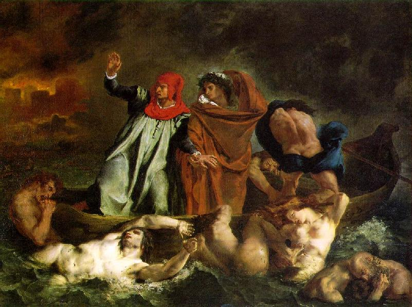

| 
Dante e Virgílio no Inferno (1822): Dante e Virgílio atravessam o rio Estige com o barqueiro Flégias. No fundo, a cidade de Dite e o fogo eterno. Dentro do rio as almas possuídas pela ira (Canto
VIII). Pintura de Eugène Delacroix (século XIX), Museu do Louvre, Paris.
|